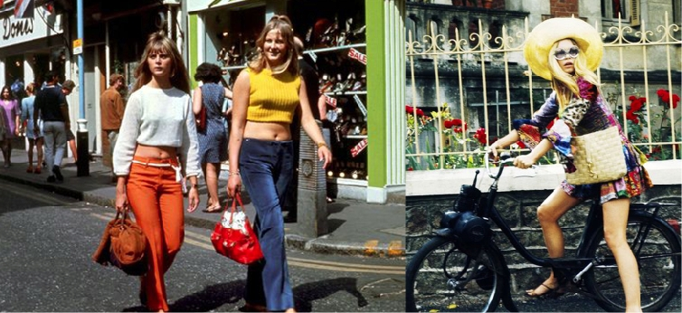
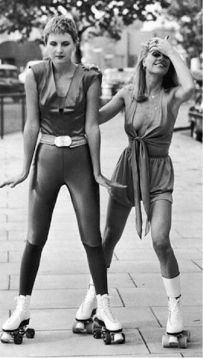

M
o
d
e
s
t
i
j
l
e
n
i
n
d
e
j
a
r
e
n
7
0
De jaren ’60 hadden de weg geopend voor een nieuwe, open min-
ded kijk op kleding.
In de jaren 70 kon men kiezen uit verschillende kledingstijlen,
waaronder: de hippie look, casual look en de discolook. De hippie
stijl was een populaire stijl die gedragen werd in het begin van de
jaren 70. De stijl was vooral te zien tussen 1969 en 1975 en werd
gedragen door zowel mannen als vrouwen.

De
vrouwen
droegen
veel
maxi
rokken,
dit
zijn
rokken
die
tot
aan
de
enkels
kwamen.
Deze
rokken
hadden
indiaanse
bloemenpa-
tronen
en
daarboven
werden
er
veel
Hon-
gaarse
blouses
en
Mexicaanse
poncho’s
gedragen.
Deze
kledingstijl
was
kenmer-
kend
omdat
er
invloeden
uit
verschillende
landen
in
samenkwam,
dit
wordt
ook
wel
een
wereldse
look
genoemd.
De
wereldse
look
was
een
gevolg
van
de
verre
reizen
die
steeds
meer
werden
gemaakt,
zoals
naar
India
en
Afghanistan.
De
mensen
zagen
meer
van
de
wereld
en
namen
dit
mee
terug. Zo ontstond deze trend.
Midden jaren 70
Halverwege
de
jaren
70,
ongeveer
rond
1975,
verdween
de
hippie
look
en
nam
de
casual
look
haar
plaats
in.
Vrouwen
begon-
nen
met
het
dragen
van
spijkerbroeken
met
daarboven felgekleurde T-shirts.
Jumpsuits
werden
een
nieuwe
trend,
deze
trend
was
afgeleid
van
de
parachutesspringers
en
de
skydivers.
Deze
pakken
werden
ontworpen
zodat
tijdens
het
sprin-
gen
het
T-shirt
niet
uit
de
broek
zou
raken.
Dit
was
een
invloed uit de sportwereld.
Vrouwen
begonnen
steeds
meer
sportieve
items
te
dra-
gen,
hieronder
vielen
tennisrokken,
hoofdbanden,
trai-
ningspakken en sneakers.
Eind jaren 70
Eind
jaren
70,
rond
1978,
veranderde
de
trend
weer
volledig.
Deze
trend
wordt
de
discolook
genoemd.
De
discolook
hield
in
dat
zowel
mannen
als
vrouwen
strak-
kere
kleding
begonnen
te
dragen
van
spandex.
Deze
stof
was
heel
elastisch,
waardoor
je
er
nog
steeds
goed
in
kon
blijven
bewegen.
Deze
outfits
bestonden
vooral
uit
de
kleuren:
zwart,
bruin
en
grijs
in
tegenstelling
tot
de
fellere
kleuren
die
de
jaren
daarvoor
waren
gebruikt.
De
kleuren
werden
gecombineerd
met
glitters,
iets
wat
daarvoor
nog
niet
in
de
mode
was
geweest.
Dit
was
to-
taal
nieuw.
Er
werd
in
die
tijd
vooral
een
nadruk
gelegd
op
de
schouders,
door
middel
van
schoudervullingen,
en
op
de
taille.
De
schoudervulling
en
nadruk
op
de
taille
is
later
ook
weer
te
zien
in
de
jaren
80.
Veel
mo-
deverschijnselen
beginnen
in
de
jaren
ervoor
en
breken
pas
jaren
later
echt
door
tot
een
trend.
Qua
schoenen
zijn
de
plateauzolen
erg
kenmerkend
voor
de
discolook,
dit
zijn
schoenen
met
een
groot
plateau
aan
de
onder-
kant
van
de
schoen.
Door
deze
schoenen
leken
de
mensen
veel
langer,
de
schoenen
bleven
echter
wel
comfortabel door het plateau.
Elke
stijl
is
weer
een
antwoord
op
de
vorige
stijl,
maar
alles komt ook ooit weer terug.